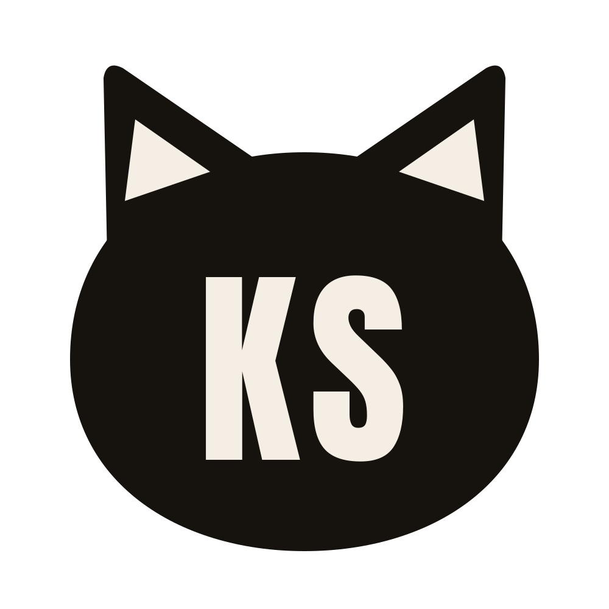
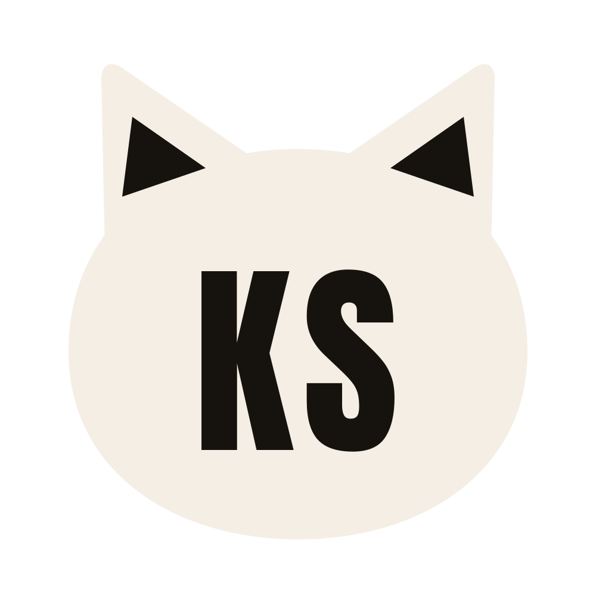

About
About me

One of the many cats I met in Turkey.
- SchoolCIS, Astana
- Grade12
- BeforeIT BIL Burabay, grades 8 to 9
- IntoData science and AI
- AlsoCats
Hi, I'm Khamza
I'm in Grade 12 at CIS in Astana. Before that I studied at IT BIL in Burabay in grades 8 and 9.
I'm interested in data science and AI, and I build my own AI projects. At CIS I co-founded the business club. I also really like cats, which you can probably tell from my photos and my logo.
Artist statement
I mostly take photos of everyday things I see, like street cats, sunsets and places I come back to. In Affinity I like putting photos together into something that doesn't exist, like an owl in a suit or a lioness with a crocodile head.
A lot of my photos ended up orange, like the sunsets and the orange wall behind the white cat, so orange became my main colour. My logo is my initials, KS, inside a cat head, in the same three colours as this whole site.
Goals
- Keep building AI projects and learn more about data science.
- Keep taking photos of the things I see every day, like cats, sunsets and places I come back to.
- Add every new project I make to this site.
Logo
My logo
KS are my initials. I put them inside a cat head because I like cats and I take a lot of photos of them. It is one simple shape in two colours, so it also works in dark and light versions, and you can still read it at 32 px, the size of the icon in a browser tab.

